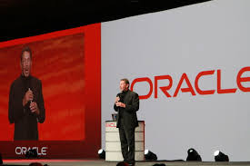

Oracle Corporation

Oracle Corporation is an American multinational computer technology corporation headquartered in Austin, Texas. The company was formerly headquarted in Redwood Shores, California until December 2020 when it moved its headquarters to Texas.[5] The company sells database software and technology, cloud engineered systems, and enterprise software products—particularly its own brands of database management systems. In 2019, Oracle was the second-largest software company by revenue and market capitalization.[6] The company also develops and builds tools for database development and systems of middle-tier software, enterprise resource planning (ERP) software, Human Capital Management (HCM) software,
customer relationship management (CRM) software, and supply chain management (SCM) software.[7]
Its key products and services are:
Oracle Database:
Release 10: In 2004, Oracle Corporation shipped release 10g (g standing for "grid") as the then
latest version of Oracle Database. (Oracle Application Server 10g using Java
EE integrated with the server part of that version of the database, making it
possible to deploy web-technology applications. The application server was the
first middle-tier software designed for grid computing. The interrelationship
between Oracle 10g and Java allowed developers to set up stored procedures written
in the Java language, as well as, those written in the traditional Oracle database
programming language, PL/SQL.)[citation needed]
Release 11: Release 11g became available in 2007. Oracle Corporation released Oracle Database 11g Release
2 in September 2009. This version was available in four commercial editions—Enterprise
Edition, Standard Edition, Standard Edition One, and Personal Edition—and in one free
edition—the Express Edition. The licensing of these editions shows various
restrictions and obligations that were called complex by licensing expert
Freirich Florea.[20] The Enterprise Edition (DB EE), the most expensive of
the Database Editions, has the fewest restrictions—but nevertheless has complex
licensing. Oracle Corporation constrains the Standard Edition (DB SE) and
Standard Edition One (SE1) with more licensing restrictions, in accordance with
their lower price.
Release 12: Release 12c (c standing for "cloud") became available on July 1, 2013.[21]
Software Edit: Oracle's E-delivery service (Oracle Software Delivery Cloud) provides generic downloadable Oracle software and documentation.
Oracle designs, manufactures, and sells both software and hardware products, as well as offering services that complement them (such as financing, training , consulting, and hosting services). Many of the products have been added to Oracle's portfolio through acquisitions.
- Oracle Corporation has acquired and developed the following additional database technologies:
- Berkeley DB, which offers embedded database processing
- Oracle Rdb, a relational database system running on OpenVMS platforms. Oracle acquired Rdb in 1994 from Digital Equipment Corporation. Oracle has since made many enhancements to this product and development continues as of 2008.
- TimesTen, which features in-memory database operations
- Oracle Essbase, which continues the Hyperion Essbase tradition of multi-dimensional database management
- MySQL, a relational database management system licensed under the GNU General Public License, initially developed by MySQL AB
- Oracle NoSQL Database, a scalable, distributed key-value NoSQL database